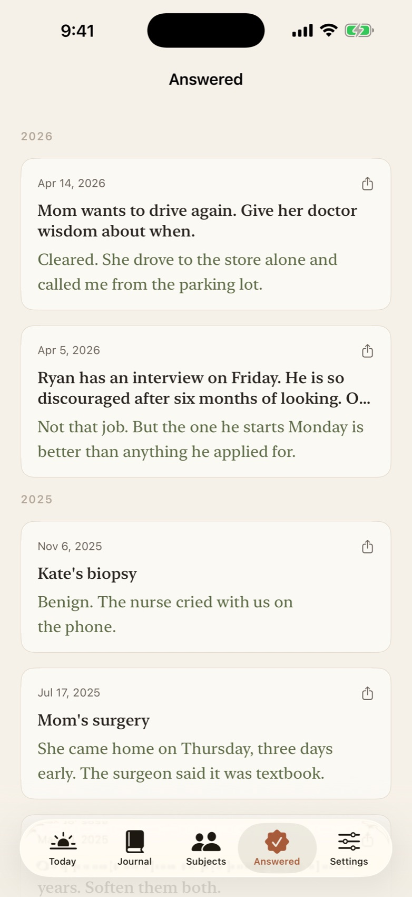
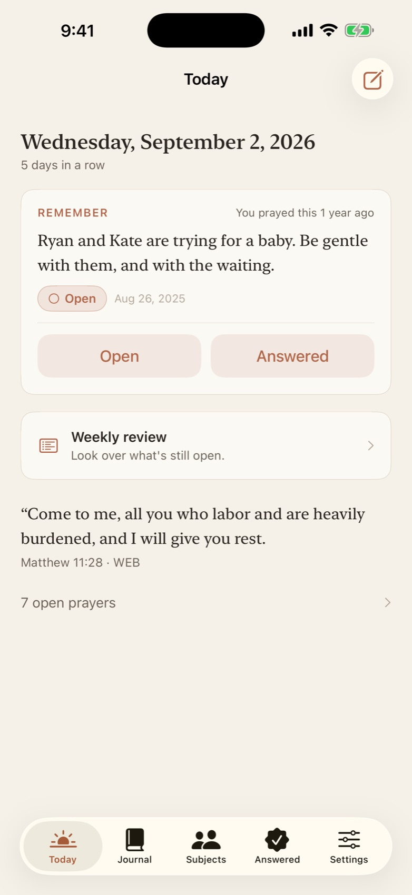
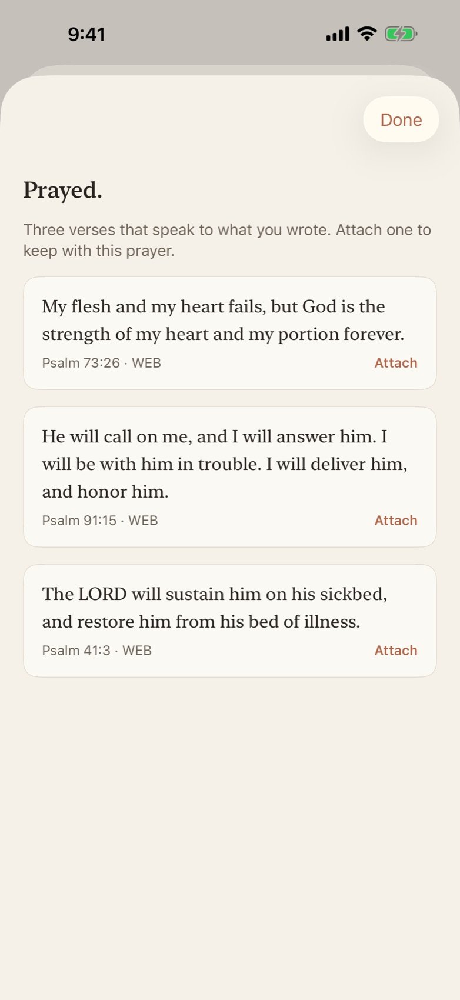
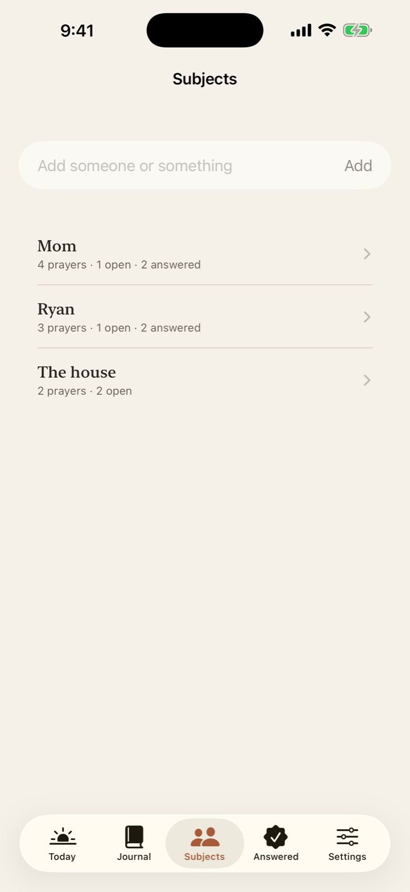
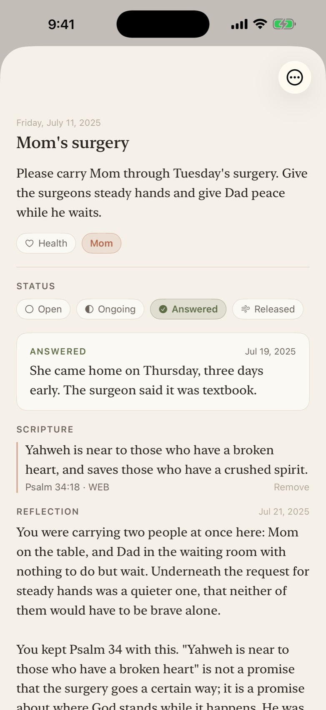

See what He's already done. Prayed brings each prayer back over time, matches scripture on your phone, and never sends your words anywhere.


What is Prayed? Prayed is a private prayer journal app for iPhone from Cooper Industries. You write what you're praying for; Prayed matches three Bible verses to it on your phone, then brings the prayer back at three days, a week, a month, a year and beyond so you can see what came of it. It has no server, no account and no analytics. Writing is free forever; Prayed Plus is $5.99/month or $34.99/year.
Most journals hold what you wrote. Prayed hands it back to you when it matters.
Prayed brings prayers back at three days, a week, two weeks, a month, three, six, a year, two years. A daily Remember card and a weekly review of everything still open keep you from losing track of what you've carried.
After you save a prayer, Prayed finds three verses from the full text of the World English Bible or the King James Version. It runs entirely on the device and works in airplane mode.

Mark each prayer as it moves. The answered ones build into a timeline you'll want to scroll through on a hard day.
Tag a person or a thing, and every prayer for them gathers in one place, from the first ask to the answer. Every prayer for Mom, together.

Ask for a reflection on any prayer and Apple Intelligence writes one right there on the device: what you were carrying, one gentle thought drawn from the scripture you kept, and a short prayer you could pray yourself. Keep it with the prayer or let it go.

There is no Prayed server and no account. Everything you write stays on your device and, if you choose, in your own iCloud.
No analytics, no tracking, no third-party code. Face ID lock is on by default.Prayed is quiet on purpose. It fits the people who already pray and want to keep better track.
The quiet details.
No cap on prayers, ever. Prayed Plus remembers your whole history.
Cancel anytime in Settings. Your prayers stay on your device either way. Payment is charged to your Apple Account at confirmation of purchase; the subscription renews automatically unless cancelled at least 24 hours before the end of the current period. See the Terms of Use and Privacy Policy.
Writing is free forever with no cap on prayers. The free plan brings back the last 30 days, includes three scripture matches and follows three subjects. Prayed Plus remembers your whole history, matches every prayer, follows unlimited subjects and adds reflections, widgets, import and export for $5.99 a month or $34.99 a year, with a 7-day free trial.
Yes. There is no Prayed server and no account. Everything you write stays on your device and, only if you choose, in your own iCloud. There are no analytics, no tracking and no third-party code. Face ID lock is on by default. Details are in the privacy policy.
After you save a prayer, Prayed finds three verses that speak to what you wrote using the full text of the World English Bible or the King James Version. The matching runs entirely on your phone with a small on-device model and works in airplane mode. Your words are never sent anywhere.
At 3 days, 1 week, 2 weeks, 1 month, 3 months, 6 months, 1 year and 2 years. A daily Remember card and a weekly review of everything still open keep you from losing track of what you've carried.
Yes. Prayed Plus imports plain text and Day One journals, and you can backdate any prayer so history you already have starts coming back right away. Everything can be exported as PDF or Markdown.
The World English Bible (WEB) and the King James Version (KJV). Both are public domain and ship inside the app.
Prayed is designed for iPhone running iOS 17 or later.
Subscriptions are managed by Apple. Open iOS Settings, tap your name, then Subscriptions, and cancel Prayed Plus. Your prayers stay on your device either way.
Free to write, forever. Plus is a week free to try.
Download on theApp Store